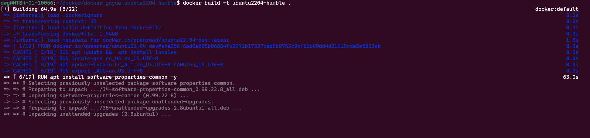
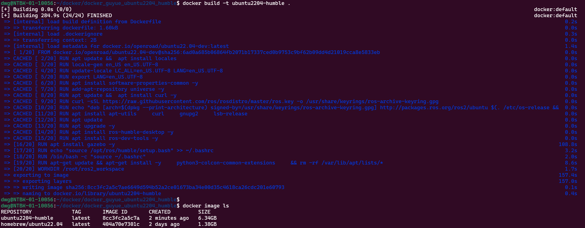
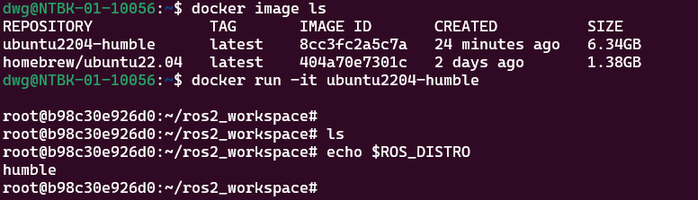
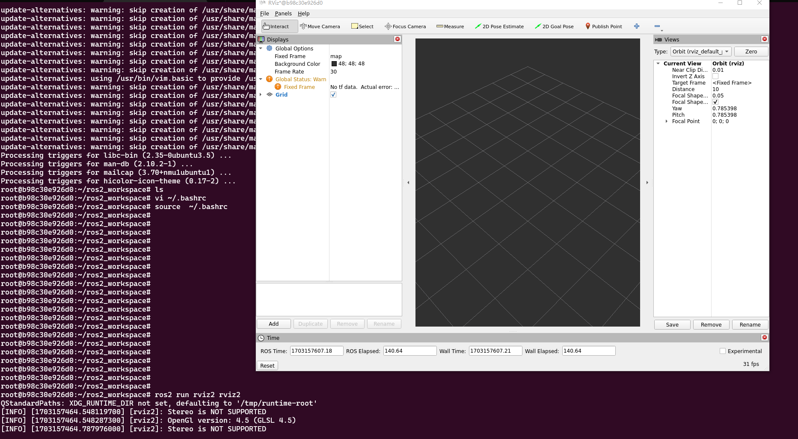
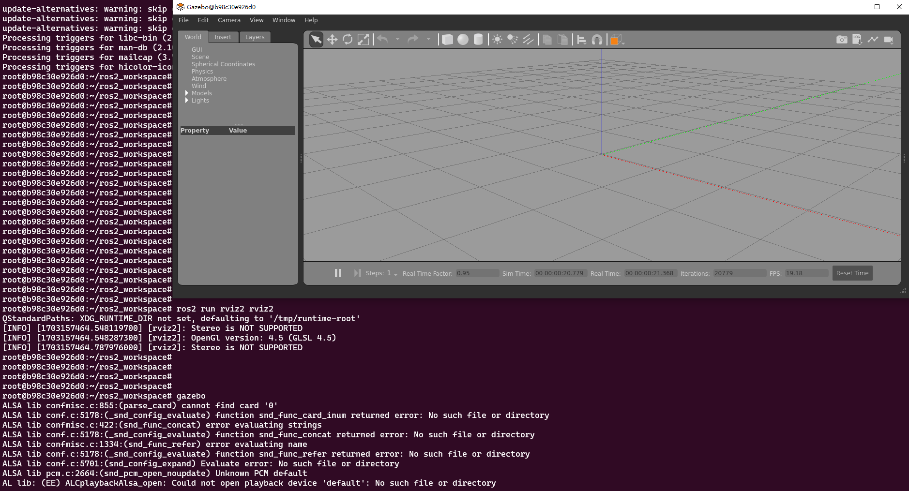
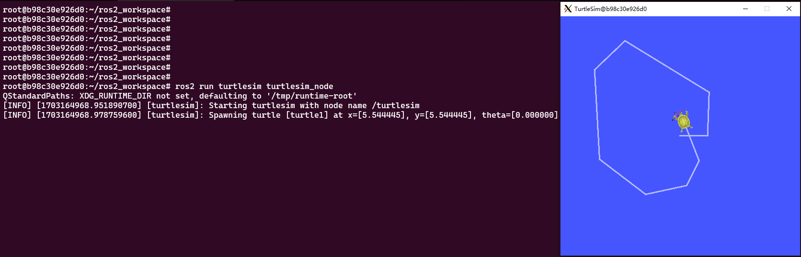

1. docker环境
1.1. Docker环境简介
Orbbec Docker开发环境说明：
1.基于Ubuntu22.04 + ROS2-humble版本
2.包含ROS2基础工具包：rviz2、gazebo11、foxglove、robot_sdk、xxx
3.包含ROS2基础示例代码
4.包含奥比Robot SDK包
5.xxx…
1.2. Docker镜像开发维护
Docker镜像基于Dockerfile进行迭代开发&管理维护。
详细见Git仓库。
1.3. Docker编译构建
1.3.1. 1.下载dockerfile仓库
git clone gitlab@code.orbbec.com.cn:robot_kit/robot_sdk.git
1.3.2. 2.修改增删dockerfile
用vscode 或文本编辑器 打开Dockerfile进行修改或新增安装 新依赖 软件
如 新增加安装 git
apt install git -y
1.3.3. 3.编译构建新镜像
编译构件命令
docker build -t ubuntu2204-humble .
编译构建过程如下图，构建名称ubuntu2204-humble

编译构建完成

如上图中 ubuntu2204-humble为我们构建出来的镜像image ubuntu2204-humble
1.3.4. 4.运行新镜像并查看ROS版本

1.3.5. 5.运行RVIZ2

1.3.6. 6.运行gazebo

1.3.7. 7.运行turtlesim示例

1.3.8. 8.退出容器
输入 exit 或者ctrl + D
1.4. Docker 配置打包
Dockerfile 配置修改测试后提交打包
1.提交全部更改到本地容器：
docker commit 【容器ID】
此时的容器会生成一个新的未命名的镜像。我们需要对它重新命名，
镜像重命名：
docker tag 0bc42f7ff218【镜像ID】 sqlmap_docker:v1【名称：版本】
镜像打包：
docker save sqlmap_docker:v1 > /root/sqlmap_docker .tar
其中/root/指定存放的路径。打包完成可以在相应目录下看到多了一个tar包，这就是你装好环境的docker镜像。
2.新打包镜像如何使用
镜像tar包导入：
docker load -i sqlmap_docker .tar
运行这个镜像，进入对应的容器，然后就可以在相应目录下运行开发测试你的代码了。
1.5. Docker镜像使用常见问题记录
1…
1.6. 参考链接
1. https://blog.csdn.net/qq_41226644/article/details/132237080